IBM Capstone Data Engineering Project
Overview
This project explored several data engineering technologies, concepts and skills that I acquired while completing the IBM Data Engineering Professional Certificate. You can find all the screenshots and scripts pertaining to this project on GitHub.
Data Platform Architecture and OLTP Database
PostgreSQL Data Warehouse
Data Analytics and IBM Cognos Dashboards
ETL & Data Pipeline (Airflow, Python and Bash)
Big Data Analytics with PySpark
Below is a summary of some of the tasks I performed and some of the screenshots I took during the project.
In the first section of the project, I created a table on MySQL for sales data. And then I inserted sales data from a sales_data.sql into the table. I also queried the table, performed operations and exported the data.
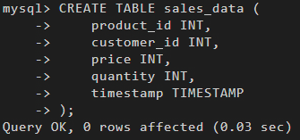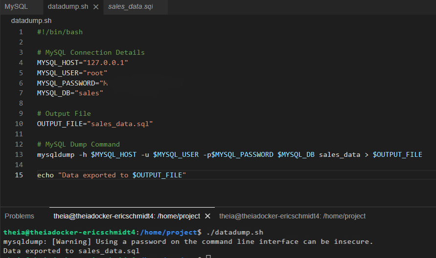
I performed a similar operation with another database in MongoDB. I imported a file into it, performed queries, created an index to improve query performance and exported the database.
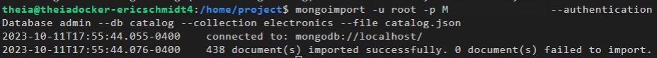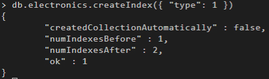
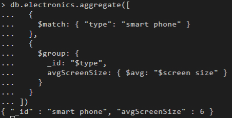
I also designed and created a star schema for a database which was supposed to hold ecommerce data on PostgreSQL. Then I performed several queries on the database, from simple select queries to groupingsets, cubes, rollups and created a materialized view.
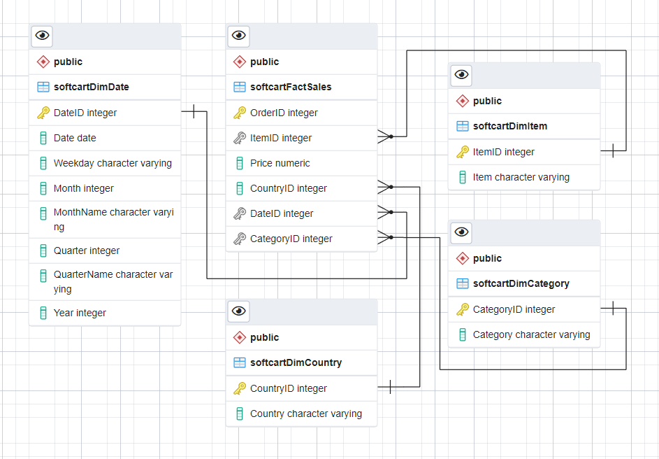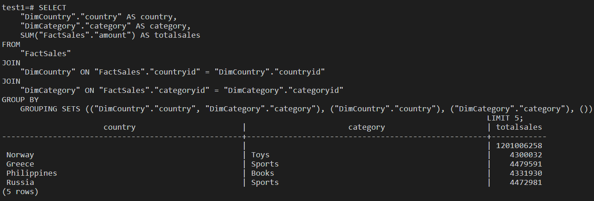
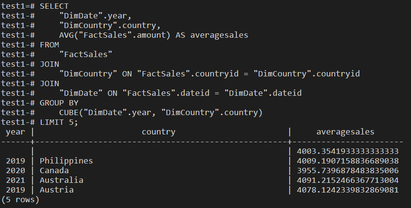
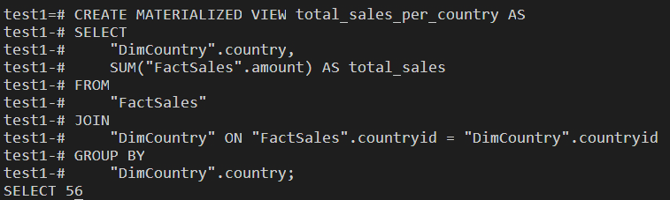
I imported a dataset into IBM Cognos Dashboards and created dashboards such as a bar graph to show mobile phone sales in each quarter, a line graph to show sales for each month of 2022, and a pie chart to show sales for three product categories.
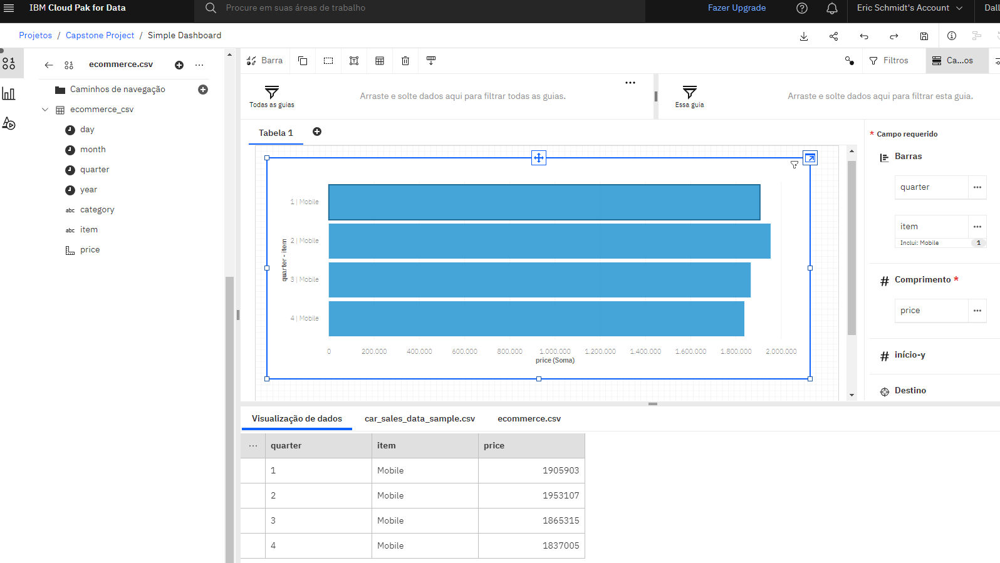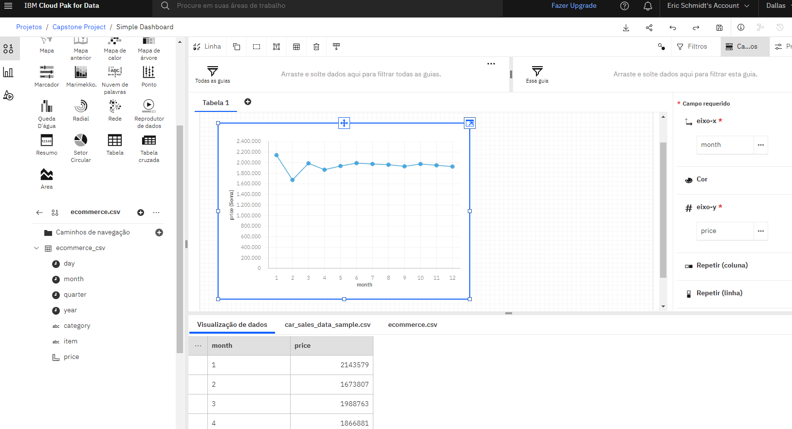
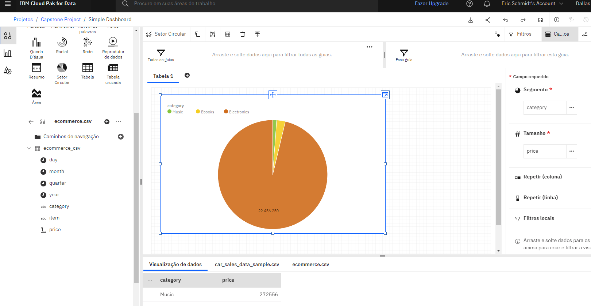
I automated the process of retrieving the latest records from a MySQL table and inserting them into a PostgreSQL data warehouse. Below are the Python functions that fetch the records, insert them and the output I got after executing the script.
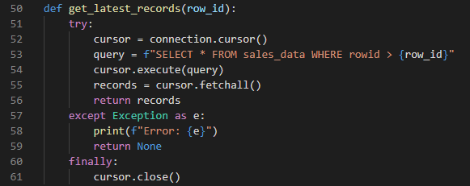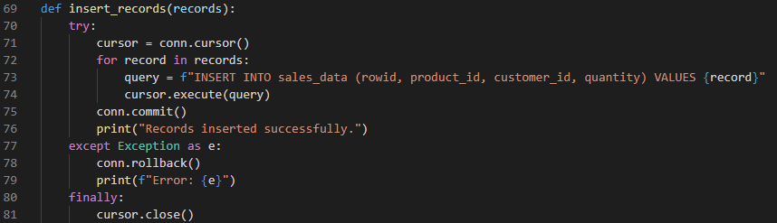
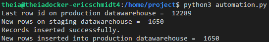
I used Airflow to create a data pipeline that extracts specific IP addresses from a access log file and loads them into a destination file.
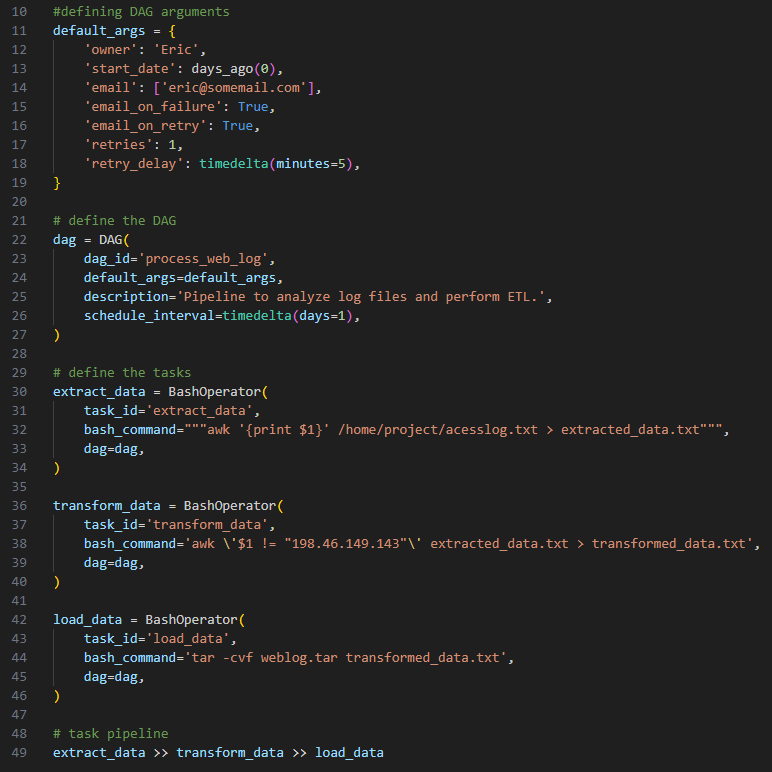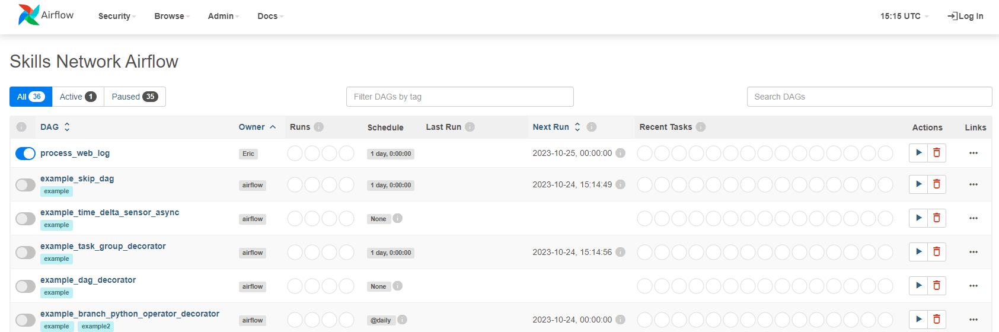
I used PySpark to load a sales prediction model, apply it to a sales data set, and predict the sales for the year 2023.
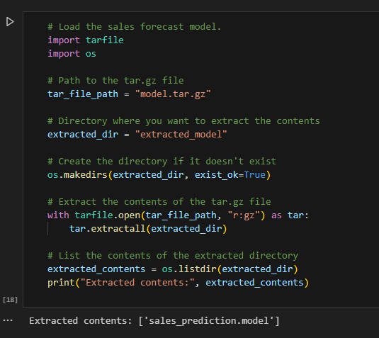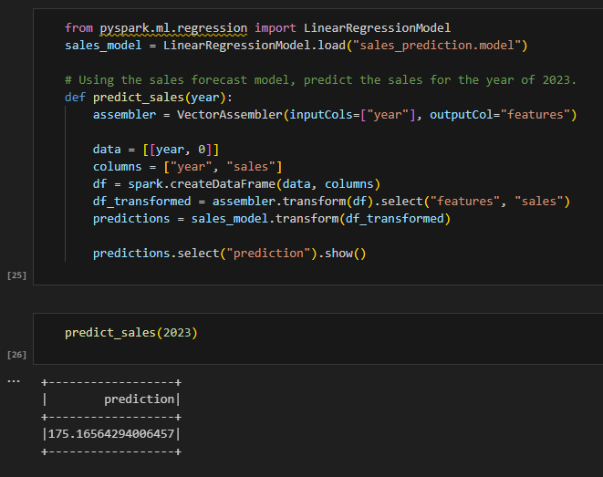